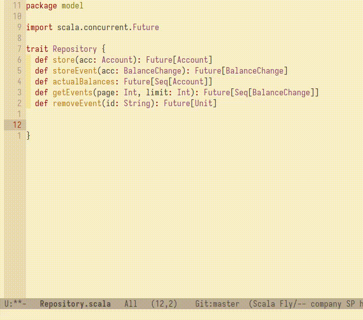
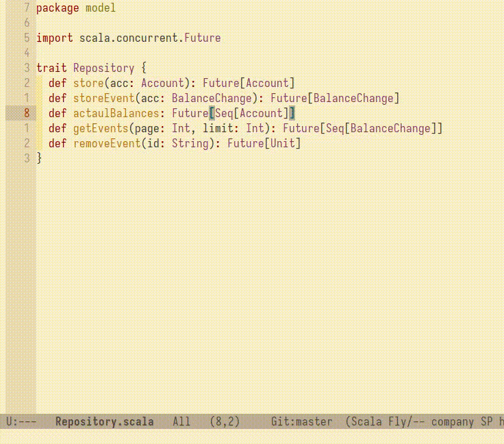
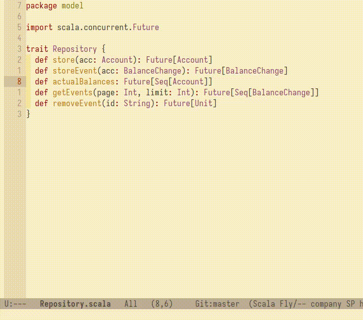
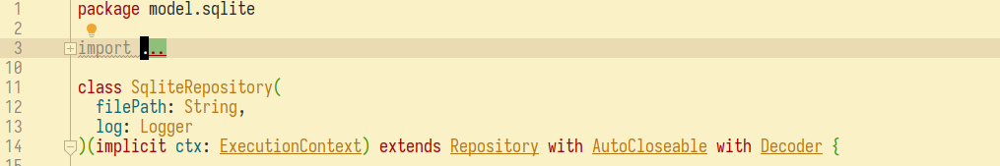

I'm a Scala developer and an active Emacs user.
This note is dedicated to things I've noticed while working with
Scala in a plain-text development environment. To find out why I
use Emacs you can check this remark
My Journey from IntelliJ IDEA to Minimal Configuration Emacs.
During my journey, I discovered that I could solve most of the annoying Scala development problems on my own or by using Emacs extensions.
I'm not using LSP, but I needed a function that suggests imports to add. I decided to solve this problem in the simplest way possible: I wrote a function that greps source files and collects all existing imports into a cache file for instant access.
I'm very proud of this extension because I don’t need anything except grep to achieve a similar experience to find import in a smart IDE.
As part of this extension, scalai.el, I also wrote additional functions to optimize and check unused imports, which helps me during editing.
I like how the built-in query-replace in Emacs works - it gives you complete control over what you are changing. However, it's not always suitable for more complex edits. Fortunately, Emacs has an amazing extension, rg.el, which allows you to find all occurrences across files and edit them interactively inside the search results buffer.
This kind of refactoring lets you perform almost any edit as you would in a regular buffer. It's awesome!
I found that simple text auto-completion covers all my needs, making a full-fledged LSP unnecessary. I use company.el - it's smooth, fast, and highly configurable.
I’m comfortable just using grep/rg or navigating to a file by class name. There aren’t many extra benefits beyond remembering file locations and project structure. In demo I used sbt-mode.el
No need to recalculate indexes or invalidate caches. Just switch the branch and start editing instantly. sbt clean compile
Since I rely on text search tools, I pay more attention to naming functions and fields carefully to avoid cases where different entities have the same name.
By default, IDEs hide imports, which I believe is a bad approach, especially for inexperienced developers. I've seen junior developers fix errors by adding random imports, only to later ask why their code isn't working. When I pointed out that they had used the wrong imports, they were surprised.
Manually managing imports can also make code more readable. Scala has a great feature called "scoped importing," which allows you to import directly within a class/method/function scope.
This is especially helpful when working with boilerplate-heavy models, such as Scala GRPC protobuf views.
Example:
grpc.{, , }
(order: ): = {
grpc..
order {
.(drink) => extractFromDrink(drink)
.(food) => extractFromFood(food)
}
}
(drink: ): = {
grpc..
drink {
.(tea) => tea.drinker
.(coffee) => coffee.drinker
}
}
(food: ): = {
grpc..
food {
.(fish) => fish.eater
.(veg) => veg.eater
}
}
I don't try to keep everything in my head. When I need to use a class or function, I look for existing code snippets. This either helps me recall how to use them or teaches me something new. If I don’t fully understand what’s happening, I read the official documentation or check the library sources.
This approach helps avoid common mistakes, such as forgetting to close resources or handling errors improperly.
Of course, this method has its downsides. If the code snippet I find contains bugs, I might end up replicating them. However, by checking multiple occurrences, I can compare and identify inconsistencies.
When I used an IDE, I generally ignored compile logs because I relied on the IDE to highlight errors. Now, I make an effort to keep my compile logs clean and fix warnings as well.
This applies to any language I use. I’m never fully confident that my code is correct because I’ve seen too many cases where either I or my coworkers were too self-assured and made mistakes. Now, I like to think about new code this way:
"Does this code work?" – Hell if I know. Let’s run it!
Date: Sat Feb 22 09:30:49 PM CET 2025